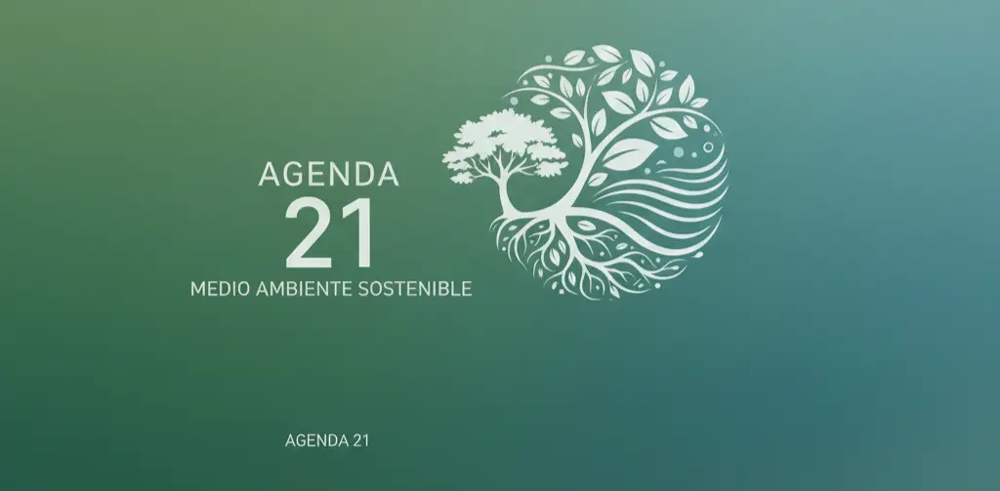

Capitulo 4
La Agenda 21
Introducción a la Agenda 21
Los problemas ambientales no son solamente problemas particulares que afecten a un sitio o a un pequeño grupo de individuos, la degradación ambiental no respeta frontera ni límites políticos, en tal virtud, deben adoptarse medidas de cooperación internacional para hacer frente a estos problemas. Hay fenómenos como la lluvia ácida, el calentamiento de la atmósfera debido a los efectos de los gases de efecto invernadero, la destrucción de los bosques tropicales, la perdida de especies, la destrucción de la capa de ozono, la desigualdad económica y social entre los individuos de la especie humana, la pobreza y el agotamiento de los recursos naturales.
Antecedentes de la agenda 21
La agenda 21 se empezó a gestar con el movimiento iniciado en el año de 1968, cuando un grupo de 35 científicos de 30 países diferentes se reunieron preocupados por los daños que el estilo de desarrollo estaba causando en el planeta, los temas prioritarios sirvieron de plataforma de lanzamiento para otras reuniones sobre el medio ambiente y el desarrollo, el grupo decidió en 1983 la creación de la Comisión Mundial sobre Ambiente y Desarrollo, y creó el concepto de desarrollo sostenible.